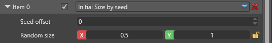

Инициализаторы частиц
Продвинутый Художник Программист
Инициализаторы контролируют состояния частиц, такие как положение, скорость, размер и т.д., когда частицы впервые создаются. Они не оказывают никакого влияния на частицы, созданные в предыдущих кадрах.
Note
Некоторые актуализаторы изменяют значение частицы в конце кадра. Они фактически перезаписывают любые начальные значения, установленные аналогичным инициализатором. Так обстоит дело со всеми анимациями. Они работают на протяжении всего времени существования частицы, а актуализатор цветовой анимации перезаписывает любые начальные значения из инициализатора цвета.
Аналогично, инициализаторы, работающие с одним и тем же полем, являются исключительными, и только нижний из них будет иметь какой-либо эффект, поскольку они выполняются по порядку. Например, если назначить два инициализатора цвета, то только второй из них будет иметь какой-либо эффект.
Общие свойства
Некоторые свойства являются общими для многих инициализаторов.

| Свойство | Описание |
|---|---|
| Debug draw (Отладочное рисование) | Рисует каркас отладки в сцене, чтобы показать границы инициализатора. Это видно только в редакторе сцен, а не во время работы игры. |
| Position inheritance (Наследование положения) | Наследовать положение компонента системы частиц, как определено в компоненте Transform объекта частицы |
| Position offset (Смещение положения) | Дополнительное смещение положения модуля. Если он наследует родительское положение, то применяется поверх унаследованного положения. |
| Rotation inheritance (Наследование вращения) | Наследовать вращение компонента системы частиц, как определено в компоненте Transform |
| Rotation offset (Смещение вращения) | Дополнительное вращение модуля. Если он наследует вращение родителя, то оно применяется поверх унаследованного вращения. |
| Scale inheritance (Наследование масштаба) | Наследовать равномерный масштаб компонента системы частиц, как определено в компоненте Transform |
| Scale offset (Смещение масштаба) | Дополнительное масштабирование модуля. Если он наследует масштаб родителя, то он применяется поверх унаследованного масштаба. |
Например, инициализатор скорости может изменить свое направление в зависимости от вращения родителя или решить игнорировать его и всегда стрелять частицами в фиксированном направлении.
С другой стороны, инициализаторы размера не изменяются в зависимости от поворота родителя, поэтому поля поворота вообще не появятся.
Положение (Position)
Частицы создаются в ограничивающем каркасе, выровненном по осям и определяемом левым нижним задним углом и правым верхним передним углом.

| Свойство | Описание |
|---|---|
| Смещение семян (Seed offset) | Используется для случайных чисел. Установите то же значение, чтобы принудительно связать положение с другими полями частиц, имеющими три свойства (X, Y, Z), например, скорость. Сделайте их разными, чтобы сделать позицию уникальной и независимой от других областей. |
| Position min | Левый нижний задний угол для ограничивающего каркаса |
| Position max | Правый верхний передний угол для ограничивающего каркаса |
На этом изображении показан ограничивающий каркас, где изначально появляются частицы для этого излучателя. В дополнение к углам (-1, 0.8, -1) ~ (1, 1, 1), ящик дополнительно повернут на 45 градусов, как видно из смещения вращения.
Скорость (Velocity)
Частицы появляются с начальной скоростью, которая находится в диапазоне определенных значений. Скорость независима во всех трех направлениях между X, Y и Z.

| Свойство | Описание |
|---|---|
| Смещение семян (Seed offset) | Это используется для случайных чисел. Установите его на то же значение, чтобы заставить скорость быть связанной с другими полями частиц, которые имеют 3 свойства (x, Y, Z), например, положение. Сделайте их разными, чтобы скорость была уникальной и независимой от других полей. |
| Velocity min | Левый нижний задний угол для ограничивающего каркаса |
| Velocity max | Right upper front corner for ограничивающего каркаса |
Размер (Size)
Начальный размер устанавливает равномерный размер частицы при ее первом появлении. Размер 1 приведет к билборду или квадрату размером 1 метр на 1 метр при рендеринге.

| Свойство | Описание |
|---|---|
| Смещение семян (Seed offset) | Используется для случайных чисел. Установите его на то же значение, чтобы заставить размер быть связанным с другими полями частиц, которые имеют 1 свойство, например, цвет. Сделайте их разными, чтобы заставить размер быть уникальным и независимым от других полей |
| Случайный размер (Random size) | Показывает минимальный и максимальный размер частицы во время появления. |
Вращение (Rotation)
Начальное вращение задает угловое вращение частицы, обращенной к камере. Положительные значения — это вращение по часовой стрелке. Поле имеет значение только для частиц, обращенных к камере, таких как билборды. Оно не влияет на ориентированные квадраты и модели.

| Свойство | Описание |
|---|---|
| Seed offset | This is used for random numbers. Set it to the same value to force the angle to be coupled with other particle fields which have 1 property, like color for example. Make them different to force the angle to be unique and independent from other fields |
| Angle (degrees) | The minimum and maximum value, in degrees, for the initial rotation |
Цвет (Color)
Начальный цвет устанавливает начальный цвет частицы во время появления. Он попадает в буфер вершин при построении частиц и может использоваться материалом, но может и не использоваться, если опция не установлена в самом материале. Если настройка цвета не дала результата, обратитесь к странице Материал для дальнейшего обсуждения.
| Свойство | Описание |
|---|---|
| Seed offset | This is used for random numbers. Set it to the same value to force the color to be coupled with other particle fields which have 1 property, like size for example. Make them different to force the color to be unique and independent from other fields |
| Color A | The first value, in hexadecimal code. The color will be a random tint between this and the second color. |
| Color B | The second value, in hexadecimal code. The color will be a random tint between this and the first color. |
3D-ориентация (3D Orientation)
Начальная 3D-ориентация задает ориентацию для 3D-частиц при их первом появлении. Редактируемые поля используют евклидово вращение, которое упаковано в кватернионную ориентацию движком. Интерполированное значение находится на кратчайшем пути между двумя ориентациями, а не интерполируется каждое значение по отдельности.
| Свойство | Описание |
|---|---|
| Seed offset | This is used for random numbers. Set it to the same value to force the orientation to be coupled with other particle fields which have 1 property, like size for example. Make them different to force the orientation to be unique and independent from other fields. |
| Orientation A | The first oriented position |
| Orientation B | The second oriented position |
Направление (Direction)
Этот инициализатор создает поле Направление (Direction) в свойствах частицы и задает его начальное значение. Некоторые конструкторы фигур, такие как форма Trail или форма Direction Aligned Sprite, используют направление частицы для ее правильного отображения.
| Свойство | Описание |
|---|---|
| Seed offset | This is used for random numbers. Set it to the same value to force the direction to be coupled with other other particle fields which have 3 properties (x, Y, Z), like position for example. Make them different to force the velocity to be unique and independent from other fields. |
| Direction min | Left lower back corner for the box |
| Direction max | Right upper front corner for the box |
Spawn Order
This initializer has no properties. It simply sets an increasing number to each particle spawned from this emitter, starting from 0. The spawn order can be used for sorting or some custom calculations.
Position (Arc)
The arc position initializer positions the particles in an arc (or a straight line if the arc's height is 0) between two point, the emitter's position and a target transform component. With random position offset you can cause the particles to deviate a little from their original location on the arc.

| Свойство | Описание |
|---|---|
| Seed offset | This is used for random numbers. Set it to the same value to force the position to be coupled with other other particle fields which have 3 properties (X, Y, Z), like velocity for example. Make them different to force the position to be unique and independent from other fields. |
| Position min | Left lower back corner for the box |
| Position max | Right upper front corner for the box |
| Target | Allows you to pick up an Entity for the end of the arc. If no Entity is set, Fallback Target will be used, which is an offset from the emitter's location. |
| Fallback Target | Offset from the emitter's location used as the end point in case Target is not set |
| Arc Height | The height of the arc at its highest point (middle of the distance between the two points). By default it's the Y-up vector, but can be rotated with rotation offset and rotation inheritance |
| Ordered | If checked, new particles will appear in order from the emitter towards the target. If unchecked, new particles will appear randomly on the arc anywhere between the emitter and the target. If you plan to visualize the particles as a ribbon or a trail you should set this box to checked. |
| Fixed count | By default particles will appear on the arc at distances enough for the maximum number of particles to fit exactly on the line. If you want to control spawn rate and distance, you can set how many fixed "positions" are there on the arc. For example, with a fixed count of 10 and Ordered spawning, the first 10 particles will appear in order, then the 11th particle will appear from the beginning, at the same position as the first, and so on. |
| Seed offset | This is used for random numbers. Set it to the same value to force the position to be coupled with other other particle fields which have 3 properties (X, Y, Z), like velocity for example. Make them different to force the position to be unique and independent from other fields. |
| Position min | Left lower back corner for the box. This is an offset in addition to the arc position. |
| Position max | Right upper front corner for the box. This is an offset in addition to the arc position. |
Position (parent)
| Свойство | Описание |
|---|---|
| Seed offset | This is used for random numbers. Set it to the same value to force the position to be coupled with other other particle fields which have 3 properties (X, Y, Z), like velocity for example. Make them different to force the position to be unique and independent from other fields. |
| Position min | Left lower back corner for the box |
| Position max | Right upper front corner for the box |
| Parent emitter | You have to type the name of the parent emitter. Child particles' positions will match the parent emitter's particles' positions. |
| Parent Offset | Random seed used to couple or decouple the way a parent particle is chosen. For example, if you want to pick position and color from seemingly random particles, you can use the same offset. If you want to avoid such connection, you can use different offsets for position and color initializers. |
| Spawn Control Group | When None, parents will be picked randomly. When set to one of the four groups, only particles from a specific parent will be initialized. It should match a control group from the Spawn from Parent spawner to work properly. |
Velocity (parent)
| Свойство | Описание |
|---|---|
| Seed offset | This is used for random numbers. Set it to the same value to force the velocity to be coupled with other other particle fields which have 3 properties (x, Y, Z), like position for example. Make them different to force the velocity to be unique and independent from other fields. |
| Velocity min | Left lower back corner for the box |
| Velocity max | Right upper front corner for the box |
| Parent emitter | You have to type the name of the parent emitter. Child particles' positions will match the parent emitter's particles' positions. |
| Parent Offset | Random seed used to couple or decouple the way a parent particle is chosen. For example, if you want to pick position and color from seemingly random particles, you can use the same offset. If you want to avoid such connection, you can use different offsets for position and color initializers. |
| Spawn Control Group | When None, parents will be picked randomly. When set to one of the four groups, only particles from a specific parent will be initialized. It should match a control group from the Spawn from Parent spawner to work properly. |
Size (parent)
| Property | Description |
|---|---|
| Seed offset | This is used for random numbers. Set it to the same value to force the size to be coupled with other particle fields which have 1 property, like color for example. Make them different to force the size to be unique and independent from other fields. |
| Random size | Shows the minimum and maximum size a particle can have at spawn time |
| Parent emitter | You have to type the name of the parent emitter. Child particles' positions will match the parent emitter's particles' positions. |
| Parent Offset | Random seed used to couple or decouple the way a parent particle is chosen. For example, if you want to pick position and color from seemingly random particles, you can use the same offset. If you want to avoid such connection, you can use different offsets for position and color initializers. |
| Spawn Control Group | When None, parents will be picked randomly. When set to one of the four groups, only particles from a specific parent will be initialized. It should match a control group from the Spawn from Parent spawner to work properly. |
Color (parent)
| Свойство | Описание |
|---|---|
| Смещение семян | Используется для случайных чисел. Установите его на то же значение, чтобы заставить цвет быть связанным с другими полями частиц, которые имеют 1 свойство, например, размер. Сделайте их разными, чтобы заставить цвет быть уникальным и независимым от других полей. |
| Color A | The first value, in hexadecimal code. The color will be a random tint between this and the second color. |
| Color B | The second value, in hexadecimal code. The color will be a random tint between this and the first color. |
| Parent emitter | You have to type the name of the parent emitter. Child particles' positions will match the parent emitter's particles' positions. |
| Parent Offset | Random seed used to couple or decouple the way a parent particle is chosen. For example, if you want to pick position and color from seemingly random particles, you can use the same offset. If you want to avoid such connection, you can use different offsets for position and color initializers. |
| Spawn Control Group | When None, parents will be picked randomly. When set to one of the four groups, only particles from a specific parent will be initialized. It should match a control group from the Spawn from Parent spawner to work properly. |
Spawn Order (parent)
This initializer requires the parent emitter to also have a Spawn Order initializer. It combines the parent's spawn number with its own, effectively creating groups of particles among the children. This initializer is required to properly sort and render child ribbon particles.
| Свойство | Описание |
|---|---|
| Parent emitter | You have to type the name of the parent emitter. Child particles' positions will match the parent emitter's particles' positions. |
| Parent Offset | Random seed used to couple or decouple the way a parent particle is chosen. For example, if you want to pick position and color from seemingly random particles, you can use the same offset. If you want to avoid such connection, you can use different offsets for position and color initializers. |
| Spawn Control Group | When None, parents will be picked randomly. When set to one of the four groups, only particles from a specific parent will be initialized. It should match a control group from the Spawn from Parent spawner to work properly. |